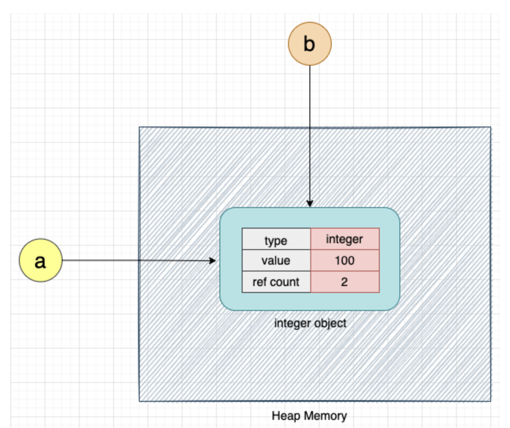

C Go Java Python内存结构及对比
Contents
声明: 很多知识尤其是GC相关也是刚接触, 里面很可能会有不正确的观点, 会在接下来的学习中不断的修改, 当作自己的笔记, 用质疑的心态去读… 英文部分皆是拷贝的其它文章和官方文档, 链接都在文章末尾,
1. C
C has three different pools of memory:
- static: global variable storage, permanent for the entire run of the program.
- stack: local variable storage (automatic, continuous memory).
- heap: dynamic storage (large pool of memory, not allocated in contiguous order).
1.1. Static Memory
Static memory persists throughout the entire life of the program, and is usually used to store things like global variables, or variables created with the static clause. If a variable is declared outside of a function, it is considered global, meaning it is accessible anywhere in the program. Global variables are static, and there is only one copy for the entire program. Inside a function the variable is allocated on the stack. It is also possible to force a variable to be static using the static clause. For example, the same variable created inside a function using the static clause would allow it to be stored in static memory.
|
|
1.2. Stack Memory
The stack is used to store variables used on the inside of a function (including the main() function). It’s a LIFO, “Last-In,-First-Out”, structure. Every time a function declares a new variable it is “pushed” onto the stack. Then when a function finishes running, all the variables associated with that function on the stack are deleted, and the memory they use is freed up. This leads to the “local” scope of function variables. The stack is a special region of memory, and automatically managed by the CPU – so you don’t have to allocate or deallocate memory. Stack memory is divided into successive frames where each time a function is called, it allocates itself a fresh stack frame.
Note that there is generally a limit on the size of the stack – which can vary with the operating system (for example OSX currently has a default stack size of 8MB). If a program tries to put too much information on the stack, stack overflow will occur. Stack overflow happens when all the memory in the stack has been allocated, and further allocations begin overflowing into other sections of memory. Stack overflow also occurs in situations where recursion is incorrectly used.
- the stack grows and shrinks as variables are created and destroyed
- stack variables only exist whilst the function that created them exists
1.3. Heap Memory
The heap is the diametrical opposite of the stack. The heap is a large pool of memory that can be used dynamically – it is also known as the “free store”. This is memory that is not automatically managed – you have to explicitly allocate (using functions such as malloc), and deallocate (e.g. free) the memory. Failure to free the memory when you are finished with it will result in what is known as a memory leak – memory that is still “being used”, and not available to other processes. Unlike the stack, there are generally no restrictions on the size of the heap (or the variables it creates), other than the physical size of memory in the machine. Variables created on the heap are accessible anywhere in the program.
Oh, and heap memory requires you to use pointers.
- the heap is managed by the programmer, the ability to modify it is somewhat boundless
- in C, variables are allocated and freed using functions like malloc() and free()
- the heap is large, and is usually limited by the physical memory available
- the heap requires pointers to access it
在这先讨论一下C和Java的heap和stack, 首先是heap:
C 与 Java对待heap上内容的处理方式可以说是完全不同, 前者必须手动管理而后者完全是GC自动清理, 主要原因还是 Java引入了GC可以自动管理heap上存储的内容, C 的内存结构很简单, 堆栈和静态, 而Java里则在heap里衍生出了constant pool, method area等东西, 具体可以参考我的另一篇文章: Java内存结构, 弄明白了Java里的概念, 自然可以区分对比C,
相对C, Java不仅有 GC 而且引入了 reference 的概念, 有人可能会说 C 里不也有引用吗那个&, 不好意思那是C++的,
Java里可谓是万物皆对象, 且对象与变量分离, 即变量只是指向对象的一个引用reference, 变量存储在stack上, 所有对象存在heap上, 比如String str = "hello world"中"hello worl":就是个对象, 而变量str只是个引用, 引用在stack上, 这就与C类似了即创建该引用的函数返回时stack上的该函数的stack frame被pop出去, 即变量str被自动清理, 但对象"hello world"呢? 对象在heap上, 函数返回, 函数的stack frame被清理但heap上的对象还没有被清理, 这个时候就是GC出马了, 常见GC一种方法是看对象的引用计数是否为零, 但是这种又容易引起cyclic references的问题, 所以像JVM, C#, Ruby, JavaScript, Golang采用的是另一种GC即Mark & Sweep GC, 但CPython的GC采用的主要是reference counting方法, 由于内容太多, 具体CPython采用此方法的原因以及如何解决circular reference的方法请参考官方文档: Garbage Collector Design
Java里的变量分为两种: primitive 和 reference, 具体参考 Java内存结构
两种GC: Mark & Sweep GC 和 Reference counting GC
JVM对于对象的处理, 以String对象为例: In fact the rules for garbage collecting objects in the string pool are the same as for other String objects: indeed all objects. They will be garbage collected if the GC finds them to be unreachable.
对于 stack, Java 和 C 其实是几乎一样的, 他们都有stack frame的概念, 即每个函数单独一个frame, 只在头部进行push或者pop, 这也是stack比heap快的原因, 不需要任何的look up, 除此之外因为stack的内存是连续的, 我们每次都是push到其头部, 就像摞箱子, 所以在编译期就需要知道其size, 不然怎么知道下一块放到内存的哪个地址呢? 至于 thread stack 这里不讨论, 也暂时没研究JVM的线程管理, 另外还有相关话题即pass by value还是pass by reference的问题, 这里我们留在后面与Python和Golang一起讨论, 接下来看看 Golang,
2. Golang
Go的内存结构就复杂了, 这里注意内存模型Memory Model和内存结构Memory Structure (Memory Management)不是一个东西, 这是一个很长的任务啊, 明天再写吧, 还有作业…
需要强调的是Golang里是没对象概念的, 也不存在Java和python里的那种引用[1], golang里只存在variable和value, 所以说Golang跟C很像, 下面Go官方的FAQs也间接说出来Golang的内存结构:
How do I know whether a variable is allocated on the heap or the stack?
From a correctness standpoint, you don’t need to know. Each variable in Go exists as long as there are references to it. The storage location chosen by the implementation is irrelevant to the semantics of the language.
The storage location does have an effect on writing efficient programs. When possible, the Go compilers will allocate variables that are local to a function in that function’s stack frame. However, if the compiler cannot prove that the variable is not referenced after the function returns, then the compiler must allocate the variable on the garbage-collected heap to avoid dangling pointer errors. Also, if a local variable is very large, it might make more sense to store it on the heap rather than the stack.
In the current compilers, if a variable has its address taken, that variable is a candidate for allocation on the heap. However, a basic escape analysis recognizes some cases when such variables will not live past the return from the function and can reside on the stack.
当然go里也有new关键字, 就像C里的malloc, new在heap上创建struct, 然后返回其地址, 这里也要说一下, 不知道你发现没, heap都是由GC管理, stack即都是线程或者函数stack frame所在的地方, 当函数返回时自动被清理, 具体细节关于Golang内存结构, 因为太多了, 打算专门记录几篇文章, 不在这讨论了,
[1]: Java, Python都是对象在heap, 指向对象的变量又叫引用reference, 存储在stack上
3. Java
这个好写, 之前研究过, 上面也与C进行对比了, 比较懒: Java内存结构 | 橘猫小八的鱼
4. Python
4.1. Objects in Python
Everything in Python is an object. Classes, functions, and even simple data types, such as integers, floats, and strings, are objects in Python. When we define an integer in Python, CPython internally creates an object of type integer. These objects are stored in heap memory.
Each Python object consists of three fields:
- Value
- Type
- Reference count
Let’s consider a simple example:
|
|
When the above code is executed, CPython creates an object of type integer and allocates memory for this object on the heap memory.
The type indicates the type of the object in CPython, and the value field, as the name suggests, stores the value of the object (100 in this case). We will discuss the ref_count field later in the article.

Memory management in Python involves a private heap containing all Python objects and data structures. The management of this private heap is ensured internally by the Python memory manager. –Memory Management — Python 3.11.3 documentation
可能你注意到了, 上面说的CPython是个啥?
CPython is the default and most widely used implementation of the Python language. When we say Python, it essentially means we’re referring to CPython. When you download Python from python.org, you basically download the CPython code. Thus, CPython is a program written in C language that implements all the rules and specifications defined by the Python language. CPython can be defined as both an interpreter and a compiler as it compiles Python code into bytecode before interpreting it.
Since CPython is the reference implementation, all new rules and specifications of the Python language are first implemented by CPython.
In this article, we will discuss the internals of memory management of CPython. Please note: Other implementations, such as Jython and IronPython, may implement memory management in a different way.
As CPython is implemented in the C programming language, let’s first understand two important functions related to memory management in C: malloc and free! 这个已经知道是啥了, 就不放到这了, 原文链接在下面,
4.2. Variables in Python
Variables in Python are just references to the actual object in memory. They are like names or labels that point to the actual object in memory. They do not store any value.
Consider the following example:
|
|
As discussed earlier, when the above code is executed, CPython internally creates an object of type integer. The variable a points to this integer object as shown below:

We can access the integer object in the Python program using the variable a.
读到这可以看出Java还不是真正的万物皆对象(如果想在heap上创建primitive对象 需要Integer声明创建), 但Python就是所有的东西都是对象, 即使是一个int类型, 甚至一个函数也是个对象, 另外Java与python的GC(Python中不叫GC叫Python memory manager)对对象的管理方式基本上是一样的, 即分为引用和对象两部分, 引用在stack, 对象在heap, 不像c++那种在函数里声明的就是局部对象(不是malloc和new), 对于Java与python来说无论你在哪创建一个对象, 他们都会被创建到heap上, 且根据引用计数来判断对象是否reachable, 然后判断是否回收对象, 所以你完全可以返回一个“局部对象”的引用, 但C++中, 肯定就不行了, 这会造成野指针问题,
Let’s assign this integer object to another variable b:
|
|
When the above code is executed, the variables a and b both point to the same integer object, as shown below:

Let’s now increment the value of the integer object by 1:
Let’s now increment the value of the integer object by 1:
|
|
When the above code is executed, CPython creates a new integer object with the value 101 and makes variable a point to this new integer object. Variable b will continue to point to the integer object with the value 100, as shown below:

Here, we can see that instead of overwriting the value of 100 with 101, CPython creates a new object with the value 101 because integers in Python are immutable. Once created, they cannot be modified. Please note that floats and string data types are also immutable in Python.
Let’s consider a simple Python program to further explain this concept:
|
|
The above code defines a simple while loop that increments the value of the variable i until it is less than 100. When this code is executed, for every increment of the variable i, CPython will create a new integer object with the incremented value, and the old integer object will be deleted (to be more precise, this object would become eligible for deletion) from memory.
CPython calls the malloc method for each new object to allocate memory for that object. It calls the free method to delete the old object from memory.
|
|
We can see that CPython creates and deletes a large number of objects, even for this simple program. If we call the malloc and free methods for each object creation and deletion, it will degrade the program’s execution performance and make the program slow.
Hence, CPython introduces various techniques to reduce the number of times we have to call malloc and free for each small object creation and deletion. Let’s now understand how CPython manages memory!
阅读更多: Memory Management in Python - Honeybadger Developer Blog
5. Pass by Value or Reference
关于Golang的讨论请参考:Golang值传递分析之传递指针的规则介绍(Methods, Functions & interface value) | 橘猫小八的鱼
Java, Golang, C 都是 pass by value, C 的不再讨论, 在这说一下Java函数传reference的时候传的是reference的值, 即地址:
|
|
变量jack存的是对象Person(18, “jack”)在heap上的地址, 假入是0x7D, 那变量p的值也是0x7D, 如果在函数foo中我们执行如下:
|
|
调用了函数foo后, 变量jack的值变了吗? 肯定没有, jack的值依然是Person(18, “jack”)的地址0x7D, 谁变了呢? 答案是Person(18, “jack”), 该对象的name属性变成了John, 而变了p只是从最初的地址即0x7D变成了另一个对象Person(17, "AK")的地址,
虽然Golang也是值传递, 但和Java还很不一样, Golang的表现更像C, 因为Golang里没有对象和引用的概念, 只有变量和其value, 所以你传递一个变量的时候, 就是把那个变量的value当参数传递, 而不是所指向对象的地址, 至于该变量是分配在stack上还是heap上, 在上面介绍Golang的时候我们已经说过, 不再赘述,
|
|
最后看一下python, 关于python也可以认为是pass by value, 行为和Java完全一样, 即传递的都是引用的值(对象的地址), 再强调一遍在python所有的值都是对象, 变量就是引用即存储对象的地址,
- If you pass a mutable object into a method, the method gets a reference to that same object and you can mutate it to your heart’s delight, but if you rebind the reference in the method, the outer scope will know nothing about it, and after you’re done, the outer reference will still point at the original object.
- If you pass an immutable object to a method, you still can’t rebind the outer reference, and you can’t even mutate the object.
|
|
最后: 对于C, C++,这种没有GC的语言的内存结构我们要清楚每一个细节, 什么时候对象被删除, 怎么删除, 分配在了哪, 对于有GC的, Golang, Java, Python这种GC的实现, 不用求于一下搞明白(也搞不明白), 因为这种语言主要的地方就在GC的设计, GC本身很复杂加上本多不同的算法, 可以留着慢慢的摸索探索, 之所以有GC的语言可以慢慢了解GC的机制是因为内存都是GC帮我们管理, 简单了解内存结构, pass by value or reference, 了解对象的清除机制即不会那么容易写出内存相关的错误, 这也是有GC的原因, 帮我们减少工作量, 等你以后有需求了, 自然就会了解, 当然这只是对新入门的来说, 如果本来很厉害..
参考:
- Memory in C – the stack, the heap, and static – The Craft of Coding
- When will a string be garbage collected in java - Stack Overflow
- Choosing a GC Algorithm in Java | Baeldung
- Golang Memory Management: Allocation Efficiency in Go Services
- Memory Management — Python 3.11.3 documentation
- Memory Management in Python - Honeybadger Developer Blog
- CPython
- 🚀 Visualizing memory management in Golang | Technorage
- methods - Is Java “pass-by-reference” or “pass-by-value”? - Stack Overflow
- Stack vs heap allocation of structs in Go, and how they relate to garbage collection - Stack Overflow
- python - How do I pass a variable by reference? - Stack Overflow
- Garbage Collector Design
- 🚀 Demystifying memory management in modern programming languages | Technorage
Author David
LastMod 2023-05-27